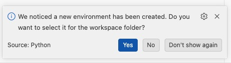
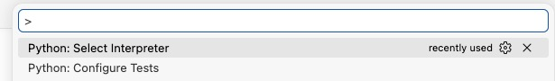
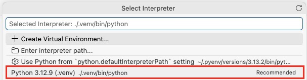

Python Environments
Objectives
- What Python packages and dependencies are
- Why virtual environments are useful
- How to create a virtual environment
- How to activate and deactivate a virtual environment
- How to use
.gitignoreto exclude generated files - How to install packages into an environment
Packages and Dependencies
One of Python's strengths is its large ecosystem of libraries, which you can download as packages using the Python Package Index (PyPI). These packages provide additional functionality that can be installed and used in your own software.
- Package
- a collection of Python code that can be installed and reused in other projects.
Most research software projects depend on external packages. For example, a text-analysis tool may depend on nltk, while a data processing pipeline may depend on pandas.
- Dependency
- a package that your software requires in order to run correctly.
Virtual Environments
As projects grow, managing dependencies becomes increasingly important. Moreover, as you work on different projects, you find that your new projects require different versions of packages used in your other projects, which can lead to conflicts if you install all your packages into your global python version. Additionally, other people that want to install and run your software will need to know which packages (and versions) of those packages are required to do so.
Python provides virtual environments to solve this problem. Each project can have its own virtual environment, allowing it to use exactly the packages and versions that it requires without interference from other python versions. After you are done with the environment (when finishing or archiving your project for example), you can just delete the folder that contains the environment and you are done!
- Virtual environment
- an isolated Python installation that contains its own packages and configuration, independent of other Python projects on the same machine. The environment is based on a Python installation on your machine, but has its own set of installed packages. In this way, a single Python installation can be used on multiple projects.
Exercise: create a virtual environment
- Step 1: Navigate to your
sandbox_NAMErepository. - Step 2: Run
python -m venv .venv - Step 3: Verify that
.venvhas been created in the working directory. - Step 4: Activate your virtual environment:
- Windows:
.venv\Scripts\activate - Linux/MacOS:
source .venv/bin/activate
- Windows:
- Step 5: Verify that your virtual environment works by checking if
(.venv)has appeared in front of your terminal cursor. - Step 6: Run
pythonand print 'hello world'. - Step 6: Deactivate the virtual environment by running
deactivate. - Step 6: Delete the
.venvfolder in your working directory.
Virtual Environment in VSCode
The Python extension for Visual Studio Code allows you to select an interpreter for the current project. The interpreter is an instance of Python. By default, the global Python installation is used. It is a good idea to select your new Virtual Environment. This offers some advantages:
- When you run a Python file from the IDE, the virtual environment will be used
- Code completion and IntelliSense presents options from packages in the virtual environment. E.g. if you have installed
requestsand you start typingrequests.g,requests.get()will be offered as an options.
Setting the virtual environment
There are two ways to set the correct interpreter.
-
When you create a new environment, VSCode might detect this, and offer to use it for this project. Click
Yesand you're all set!
-
If you did not get option 1, or ignored it, you can set and change the interpreter at any time:
- Pull up the Command Palette. This is a UI feature of VSCode that allows you to run all sorts of commands. The shortcut is
Ctrl+Shift+P (Windows/Linux)orCmd+Shift+P (MacOS) - Select the
Python: Select Interpretercommand. Start typing to get a list of matching commands.
- From the list, select the interpreter that matches
<your_project_directory>/.venv/bin/python.
- Pull up the Command Palette. This is a UI feature of VSCode that allows you to run all sorts of commands. The shortcut is
Git and Virtual Environments
When Git examines your repository, it will also see the files inside your virtual environment and show them in your staging area as having been added to your working directory. However, virtual environments should generally not be committed to version control. Not only are they specific to your machine, they can always be recreated later and often contain thousands of generated files.
The solution for this is the .gitignore file, which tells Git which files and directories should not be tracked.
What should/should not be under version control?
You can use .gitignore to exclude files from version control. How do you decide which files to include? Here's some guidelines:
- Track source code, not output. E.g. if you script produces output from some input files, don't commit the output. Instead, provide guidelines on how to produce that output.
- Don't track things that are specific to your environment. The virtual environment is an example of this. Settings for your VS Code is another example. Make sure you provide the steps to recreate an environment instead (e.g.
requirements.txt). - NEVER commit secrets. Some code requires passwords, API keys, or other secrets. Make sure you do not track these.
- Be critical before staging changes. Does the change actually need to be in the source code repository?
See the GitHub example .gitignore for entries and explanations for common Python exlusions.
Exercise: ignore a virtual environment
- Step 1: Re-create your virtual environment.
- Step 2: Run
git statusand look at the Source Control menu: do you see the .env directory with all its files in the staging area?- Note: On Python 3.13+ you will not get new detected files. Create the
.gitignoreanyway.
- Note: On Python 3.13+ you will not get new detected files. Create the
- Step 3: Create a
.gitignorefile. - Step 4: Add
.venv/to the file and save it. - Step 5: Run
git statusand look at the Source Control menu again: what do you notice? - Step 6: Commit
.gitignore.
## Next steps
This module should give you a first glimpse of how to set up a virtual environment, but you will learn even more from consulting the documentation of venv, especially the part about how it actually works can be helpful in developing your understanding of these concepts.
Works cited:
https://docs.python.org/3/library/venv.html